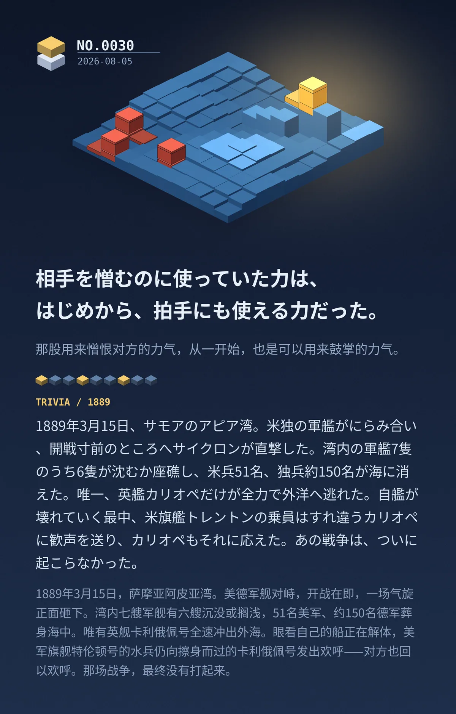

相手を憎むのに使っていた力は、はじめから、拍手にも使える力だった。（那股用来憎恨对方的力气，从一开始，也是可以用来鼓掌的力气。）
1889年3月15日、サモアのアピア湾。米独の軍艦がにらみ合い、開戦寸前のところへサイクロンが直撃した。湾内の軍艦7隻のうち6隻が沈むか座礁し、米兵51名、独兵約150名が海に消えた。唯一、英艦カリオペだけが全力で外洋へ逃れた。自艦が壊れていく最中、米旗艦トレントンの乗員はすれ違うカリオペに歓声を送り、カリオペもそれに応えた。あの戦争は、ついに起こらなかった。（1889年3月15日，萨摩亚阿皮亚湾。美德军舰对峙，开战在即，一场气旋正面砸下。湾内七艘军舰有六艘沉没或搁浅，51名美军、约150名德军葬身海中。唯有英舰卡利俄佩号全速冲出外海。眼看自己的船正在解体，美军旗舰特伦顿号的水兵仍向擦身而过的卡利俄佩号发出欢呼——对方也回以欢呼。那场战争，最终没有打起来。）